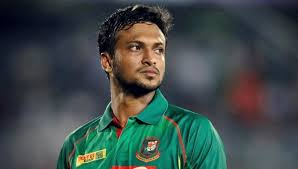
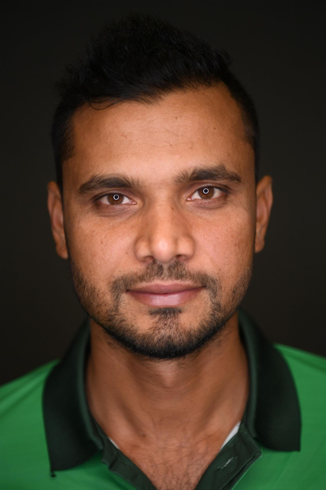
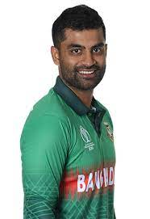
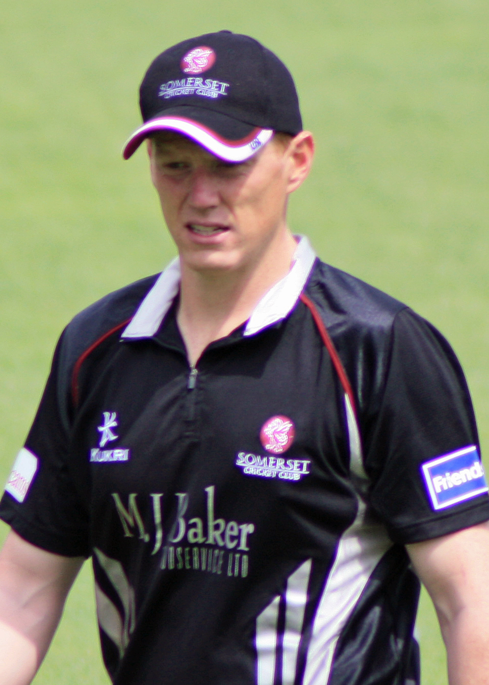
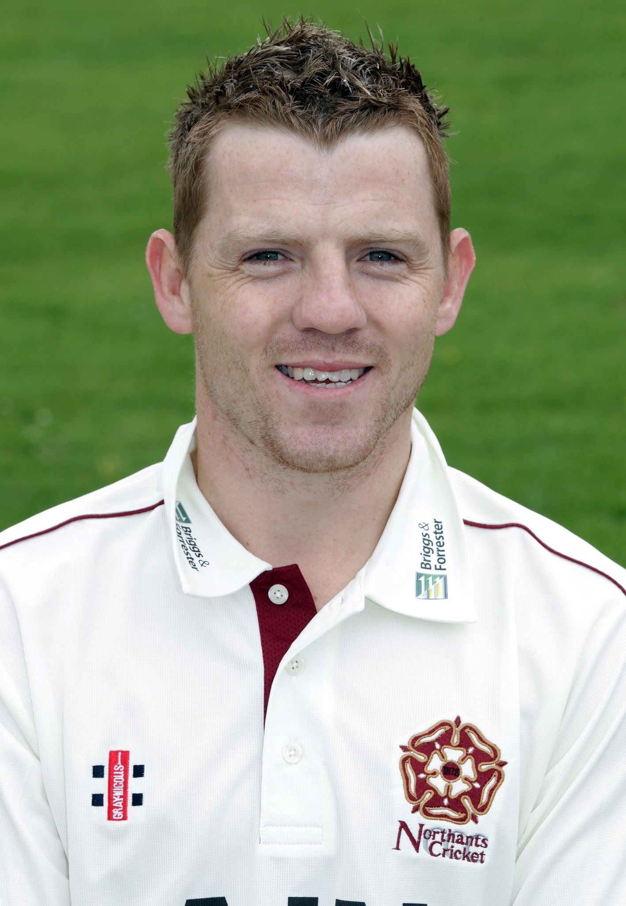
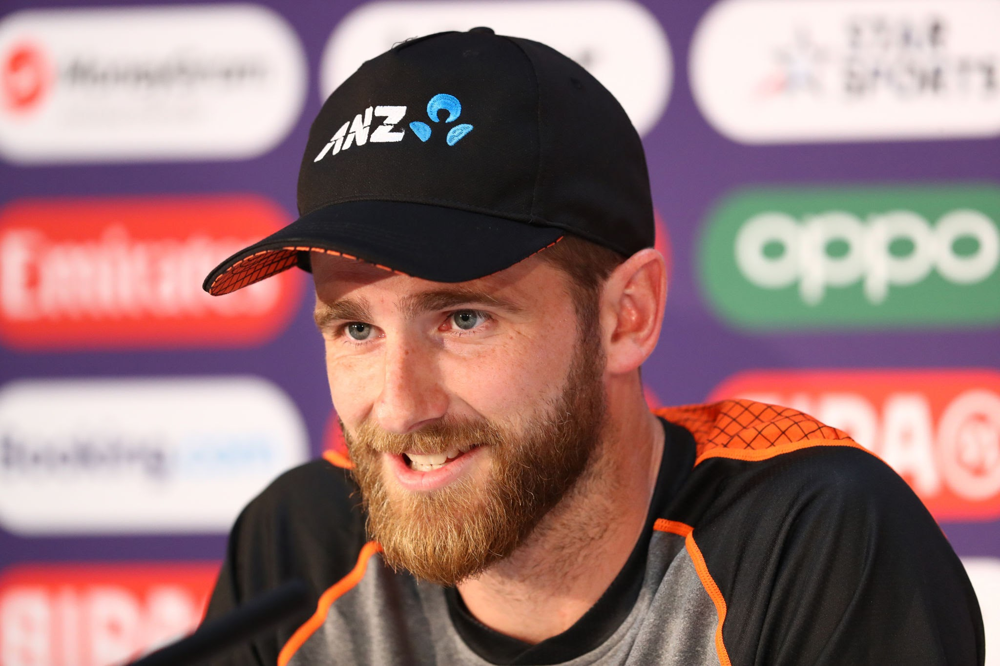
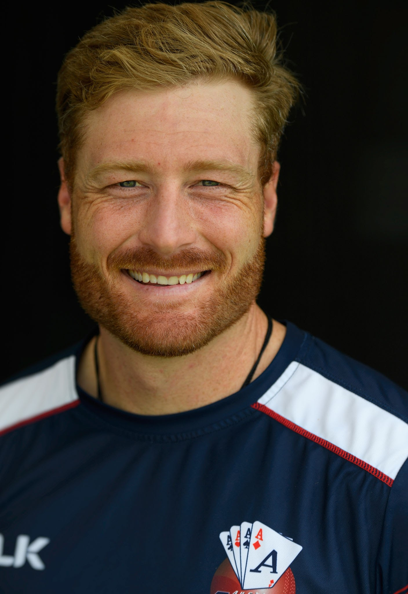
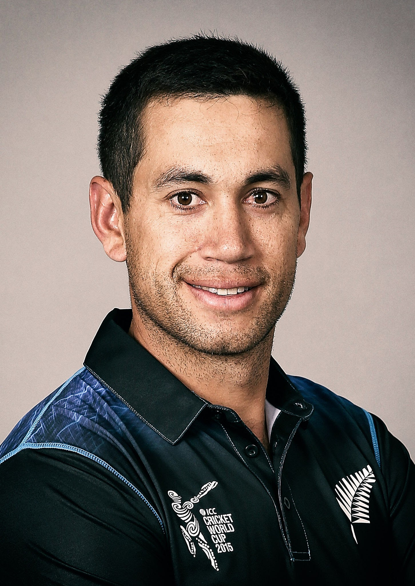

Bangladesh

Shakib Al Hasan
Shakib Al Hasan is a Bangladeshi international cricketer and philanthropist. Shakib is considered as one
of
cricket's greatest all-rounders.He was ranked as one of the world's most famous athletes by ESPN World
Fame
100 in 2019.

Mashrafe Mortaza
Mashrafe Bin Mortaza is a Bangladeshi international cricketer and politician who is the former captain in
all three formats of the game for the Bangladesh national cricket team

Tamim Iqbal
Tamim Iqbal Khan is a Bangladeshi international cricketer. He is the current Bangladesh ODI captain.
Tamim made his ODI debut in 2007 and played his first Test match the following year. He served as
vice-captain of the national side between December 2010 and September 2011
Ireland

Kevin O'Brien
Kevin Joseph O'Brien is an Irish cricketer who plays for Ireland, Leinster and Railway Union Cricket Club
and has played for several English county cricket clubs. He scored the fastest century ever in 50-over
World Cup, coming from 50 balls against England on 2 March 2011.

Niall O'Brien
Niall John O'Brien is a former Irish cricketer and a cricket commentator. He is a left-handed batsman and
wicket-keeper. Domestically O'Brien began his professional career with Kent in 2004 before joining
Northamptonshire at the start of 2007, spending 6 seasons there before joining Leicestershire for 2013.

William Porterfield
William Thomas Stuart Porterfield is a Northern Irish cricketer and former captain of the Ireland cricket
team. He played first-class cricket for Gloucestershire and Warwickshire.
New Zealand

Kane Williamson
Kane Stuart Williamson is a New Zealand international cricketer who is currently the captain of the New
Zealand national team in all formats. He is a right-handed batsman and an occasional off spin bowler.
Williamson made his first-class cricket debut in December 2007

Martin Guptill
Martin James Guptill is a New Zealand international cricketer who plays as an opening batsman in limited
overs formats of the game

Ross Taylor
Luteru Ross Poutoa Lote Taylor is an international cricketer and former captain of the New Zealand
national team. Batting predominantly at number four, he is the leading run-scorer for New Zealand in
Test and ODI cricket.